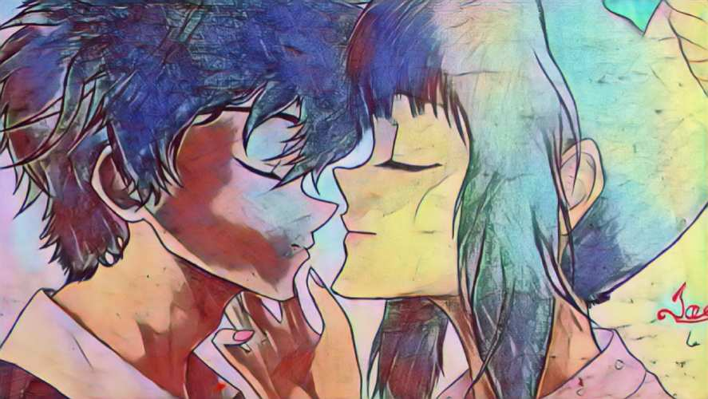

Welcome to my art journey, where every piece reflects passion, growth, and expression.
From a young age, I’ve always had a pencil in my hand and a vivid imagination. My journey began back in primary school, where drawing became my favorite escape. I was constantly sketching characters, competing with classmates to see who could draw the best Dragon Ball Z characters. Those were the days – it was all about friendly rivalry, boundless creativity, and the simple joy of bringing characters to life on paper.
I’m completely self-taught, using nothing but references and a relentless drive to improve my craft. With every sketch, I pushed myself to explore new techniques, drawing from everything around me. From cartoons to comic books, I honed my skills, guided only by passion and curiosity.
What drives me now is my love for storytelling and animation. I believe that every sketch can tell a story, and with technology, we can push the boundaries of what’s possible in art. My dream is to merge art and technology in a way that makes animating easier, especially for self-taught artists like me. I want to help people who, like me, don’t have formal training but are determined to bring their imagination to life through animation.
Explore My Work